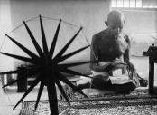
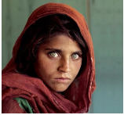
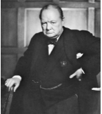
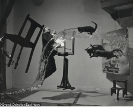

#.
.
.
One of the many fun activities here at FKS, that developed during the past online year, is our movie night, or rather, movie evening. Every once in a while, each grade joins their Zoom ID, or a few grades join a single id to watch an inspiring or educational movie. We brought snacks to each screening, and once even discussed the message of the movie afterwards, making the exciting show a learning experience too.
Last week, the entire school enjoyed the movie ‘Wonder’, directed by Stephen Chbosky. The film, adapted from a book of the same name by Raquel Jaramio Palacio, narrates the story of a young boy, August, who was born with a facial abnormality. His many medical complications keep him from attending normal school for the first ten years of his life. Finally, he joins Beecher Prep School at the beginning of fifth grade, and the book and movie show us all the events that unfold thereafter.
...
August is initially reluctant to go to school because he’d had bad experiences previously with other children, whose reactions upon first seeing him often made him feel out of place because his face frightened them. “Everyone makes the same face at first. Kids just aren’t as good at hiding it,” says August, about meeting new people. His parents persuaded him to visit the school before it officially opens for the academic year, where he could meet the principal, Mr Tushman, who turns out to be a kind and sympathetic teacher who makes a good impression on Auggie. Auggie also meets three children invited by the principal to show August, with the hope that knowing some of his classmates beforehand will make Auggie’s first day a little better. Jack, Charlotte, and Julian interact with August, and Julian upsets him by asking what the deal is with his face. However, the other two stick up for August, and in the end, he decides that he does want to go to school.
When school starts, August feels that his facial abnormality makes too much of a difference between him and the other kids. The children try to avoid sitting next to him, and he feels left out. We get a chance to see how open-minded and understanding August is when he says that he doesn’t mind people staring at him because he knows he would probably stare if, say, a Wookiee started going to school with them. The movie has a charming sequence where a Wookiee is shown joining their school, and August is the only one who steps out of the crowd of dumbfounded kids and apologises to the Wookiee. However, he soon forms a close friendship with Jack, and with a girl named Summer, though, in the movie, Summer is shown to befriend him later. Soon, Julian and a group of “popular” kids start ostracizing August.
Simultaneously, Auggie’s sister Olivia ‘Via’ Pullman starts high school and has to face losing her best friend Miranda, who undergoes a dramatic personality change. Via also struggles with the loss of her grandmother, the only person in her life who used to support her and spend time with her. Because of August’s being different, everyone else revolved around him and his needs generally took precedence over Via’s, which she used to be able to accept, but upon experiencing the difference in how people treated her at high school, where she was herself, and not just August’s sister, she feels guilty over wanting the normal life she would have had if August was like everyone else.
One thing that is striking about the movie is that it follows one of the unusual characteristics of the book’s narration style. The book is written in parts with different narrators, showing us certain events from the perspective of multiple characters, with their reactions and reasons behind their choices presented clearly and naturally. This is shown through the medium of voice-overs in the movie. However, the movie doesn’t clearly show why Julian, the main antagonist, acted how he did, while in a special chapter of the book, we get to see inside his head and witness his transformation from hating and fearing Auggie to accepting him and regretting his past actions. The book is also able to show August’s journey through the year in a more detailed way.
Wonder has a powerful and important message, which is relevant even in daily life. It teaches us how to deal with a person who is different from us. It deals with the importance of kindness, acceptance, tolerance, and respect in our relationships with those around us, and even with perfect strangers. How you react to someone, even in a chance encounter, can make a huge impact on their lives. For instance, August felt insecure about looking directly at someone because kids who saw his face when he was out in public ran away or cried in fear. The kindness of those around him helped him hold up his head proudly and gave him back his rightful place in the world. In the book, Mr Tushman, in his commencement address for August’s graduation ceremony, quotes dialogue from J. M. Barrie’s The Little White Bird- “Always try to be a little kinder than necessary.” This, we feel, is one of the most important learnings we take away from Wonder- to go out of your way to be kind because everyone deserves to be treated with respect and kindness.
All in all, both the movie and the book are amazing and guaranteed to stay with you forever. They are emotionally moving, and will help you understand what it means for someone to be so different- it changes not only their lives but those of all who know them.
-Riya Susan Tony (Literary and Communications Minister) &
-Rishitha Sarayu (Visual art and Creative Deputy Minister)
History is not just about knowing what happened in our past but more importantly it is about using it to devise your future in a better way. The purpose of history is not to remember names or timelines but to understand the consequences of actions in a better way.
History is fascinating and interests many because it gives you a perspective on the problems of the present. It also helps you understand the culture.
Studying the diversity of human experience helps us appreciate cultures, ideas, and traditions that are not our own – and to recognize them as meaningful products of specific times and places. It influences through the concepts of tradition and heritage.
...
We need to focus on how and why human behavior has changed over time. Archaeologists search for patterns in the evolution of significant cultural events such as the development of farming, the emergence of cities, or the collapse of major civilizations for clues of why these events occurred.
Understanding patterns and changes in human behavior enhances our knowledge of the past which reflects on the present.
Our past is our cultural heritage, and how we choose to use the knowledge we gain from it for future generations is important. Protecting, and celebrating our rich and diverse cultural heritage is an important duty we should be honored to perform.
Our history has been blessed to witness iconic teachers who have made a mark for themselves by contributing to intellectual, social, and spiritual levels. They have transformed lives, opened horizons of great possibilities, brought about intellectual revolutions and pushed the present to new heights.
History tells you the story of how a nation, city, or community came to be everything that it is.
It goes without saying that change can be a difficult concept to understand. Each of us has a different experience with the rest of the world. The experience which has shaped today's societal norms, cultural differences and personal behaviour. We know when we as individuals crave changes and why. It helps us better understand how, when, and why change occurs on a larger scale.
It gives us the opportunity to learn from past mistakes. It helps us understand the many reasons why people may behave the way they do today.
I believe that ‘a reflection on the past, leads to an action in the future’.
Throughout history we all have evolved our clothing and our diet and we are where we want to be. The more we understand history, the more we understand the present. It has its own reasons and answer for how and why. Question which many people teach in asking young minds to note.
An ignorance of history, of cultures, and lack of critical skills helps one to manipulate us easily.
We all have understood that slavery is the worst form of human life and it should not be encouraged at any cost after reading the history.
We have also understood that living under a dictator is a nightmare and appreciate the real value of democracy.
We all have evolved and transformed after realizing from the past. Our characters and body language have changed over time.
Our History is precious and we can learn a lot from it. We are able to evaluate war, even when a nation is at peace, by looking back at previous events. History provides us with the data that is used to create laws, or theories about various aspects of society. The past causes the present and the present forms a pathway to advance our community towards the future
Written by Kaushal Talluri
STORIES YOU NEVER KNEW ABOUT THESE FAMOUS PICTURES
...

Gandhiji and his spinning wheel - This photo is the most defining photo of the 20th century. Before India’s approaching independence, photographer Margaret Bourke-White, Life Magazine’s first female photographer, had come to India. Before taking a picture of Gandhi, she was told to learn using the spinning wheel, not to talk to Gandhij,i as it was his day of silence and to not use bright lights. She followed all the given specifications and captured the moment.
Image courtesy:iconic photos
Albert Einstein - On the evening of his 72nd birthday party, Einstein stepped into his car only to have photographer Arthur Sasse open the door and ask him for a picture. Tired of smiling for pictures, Einstein stuck out his tongue and the photographer managed to capture the moment. Einstein himself adored the picture and put it into all his greeting cards.
Image courtesy:CNN

Afghan girl- The National Geographic photographer Steve McCurry travelled around Afghanistan in 1984, to collect information about the Soviet-Afganistan war. In one of the refugee camps, a 12 year old girl, Sharbat Gula, attracted his attention. Her village had just been burnt and many of her family members had been killed. Steve took a few of her pictures and captioned as “Haunted eyes tell of an Afghan refugee’s fears''. Sharbat Gula has also been referred to as the Afghan Mona Lisa.
Image courtesy: Glitzy world

Winston Churchill- This picture of scowling Winston Churchill,former prime minister of the United Kingdom, was taken by photographer Yousuf Karsh in the parliament building of Ottawa, Canada. Karsh wanted to click a picture of Churchill, but Churchill was in no mood to have a portraiture. So, he lit a cigar. Karsh set up his camera, stepped up to him and took out his cigar. By the time he went back to his camera, he was able to compose what has been regarded as one of the most iconic portraits.
Image courtesy:karsh/woodfin camps and associates

Dali atomicus - This photograph, which can now be photoshopped, took six hours for its creation in 1984. Photographer Philippe Halsman set out to shoot his friend and longtime collaborator, Surrealist painter, Salvador Dali. Inspired by Dali’s painting “Leda Atomica”, Halsman designed a detailed scenario around Dali. The easel and the picture were suspended from a wire attached to the ceiling, the chair was held by a staff, the cats and Dali were jumping and water was being splashed. It took around 28 takes to get the perfect picture and this redefined portrait photography.
Image courtesy:east news
SOURCES
Scoopwhoop.com
Artsy.net
Brighside.me
Wix.com
Petapixel.com
Thewire.in
100photos.time.com
Written By Snigdha Indupalli